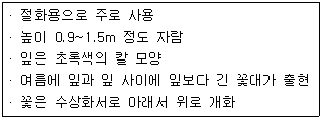
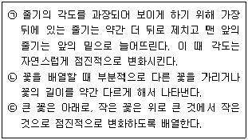

화훼장식기능사 (2014-07-20 기출문제)
1과목: 화훼장식재료
1. 화훼원예의 주요 특징으로 가장 거리가 먼 것은?
- 종류와 품종수가 극히 적은 편이다.
- 고도의 생산기술을 요구한다.
- 문화 생활수준의 향상과 더불어 발전한다.
- 경영상 시설을 이용한 연중 집약재배를 실시한다.
(정답률: 92%)

2. 두상화서(頭狀花序)로 꽃이 피는 화훼류는?
- 장미
- 카네이션
- 국화
- 칼라
(정답률: 57%)
3. 광에 따른 생육정도에 따라 음생식물과 양생식물로 분류할 수 있는데, 다음 중 양생식물에 속하는 것은?
- 아스파라거스
- 베고니아
- 군자란
- 백일홍
(정답률: 72%)
4. 흙에 심지 않고 나무나 돌 등에 붙여 재배하는 난의 종류는?
- 반다
- 심비디움
- 춘란
- 한란
(정답률: 73%)
5. 다음 설명하는 식물은?

- 제라늄
- 샐비어
- 글라디올러스
- 피튜니아
(정답률: 85%)
6. 줄기면에 부착하는 잎의 배열양식, 엽서가 바르게 연결된 것은?
- 카네이션 – 호생
- 회양목 – 대생
- 제비꽃 – 윤생
- 둥글레 – 근생
(정답률: 57%)
7. 식물명과 학명이 틀린 것은?
- 무궁화 – Hibiscus syriacus
- 튤립 – Hyacinthus tulipa
- 스토크 – Matthiola incana
- 채송화 – Portulaca grandiflora
(정답률: 48%)
8. 괴근(塊根, 덩이뿌리)에 해당하는 구근류(알뿌리)는?
- 수선화
- 글라디올러스
- 칼라
- 다알리아
(정답률: 70%)
9. 화훼장식에서 사용하는 용기 중 다공성 재질로 통기성이 좋고 자연미가 있으며, 모양과 크기가 다양하나 깨어질 위험이 있는 것은?
- 테라코타
- 유리
- 스테인리스 스틸
- 플라스틱
(정답률: 78%)
10. 화훼의 용어에 대한 정의가 틀린 것은?
- 화는 꽃을 의미한다.
- 훼는 생산되어지는 울타리 안을 의미한다.
- 절화, 분화, 종묘, 구근, 지피식물 등을 포함한다.
- 꽃, 줄기, 잎, 열매에 관상가치가 있는 초본과 목본식물을 의미한다.
(정답률: 89%)
11. 화훼장식에 사용되는 도구에 대한 설명으로 틀린 것은?
- 플로랄 테이프는 쭉 펴서 감아주면 잘 들러붙도록 다양한 색상의 종이에 접착제 성분이 있다.
- 철사는 지름에 따라 번호가 매겨지며, 수가 증가할수록 굵은 철사이다.
- 워터튜브는 절화의 줄기가 짧아 플로랄 폼에 바로 꽂을 수 없을 때 사용한다.
- 글루건은 글루스틱을 녹여 이용하는 기구이다.
(정답률: 94%)
12. 1년초로 분류되는 식물로만 나열된 것은?
- 가자니아, 피튜니아, 살비어, 크로커스
- 색비름, 팬지, 시네라리아, 달리아
- 루드베키아, 원추리, 금어초, 마가렛
- 메리골드, 금잔화, 한련화, 팬지
(정답률: 76%)
13. 구조물에 대한 설명으로 적절하지 않은 것은?
- 자연적 소재만을 이용할 수 있다.
- 기능적 구조물과 장식적 구조물이 있다.
- 최근 다양한 형태의 구조물이 사용되고 있다.
- 기능적 구조물의 경우 서포터 역할을 많이 한다.
(정답률: 94%)
14. 일반적인 식물체의 줄기 기능으로 가장 거리가 먼 것은?
- 식물체를 지지하는 기능
- 향기의 기능
- 물질의 통로 기능
- 양분 저장 기능
(정답률: 96%)
15. 생활공간용 화훼장식에 대한 설명으로 틀린 것은?
- 생활공간용 화훼장식은 이용되는 장소에 따라 특색을 가진다.
- 주거용 공간에는 크고 작은 다양한 종류의 분식물이 많이 이용된다.
- 사무용 공간에는 업무 중간에 휴식을 취할 수 있도록 녹색의 실내정원을 조성하기도 한다.
- 상업용 공간은 창의적인 디자인보다 단순하고 실용적인 디자인을 선호한다.
(정답률: 89%)
16. 소매상에서의 절화취급방법에 대한 설명으로 틀린 것은?
- 물올림 후 절화 품질과 수명을 연장시키기 위해 작물별 특성에 따라 적정 절화보존재를 사용하는 것이 좋다.
- 생산자에 의해서 출하 전 STS제가 전처리되었다면, 소매상에서는 STS제를 재처리해서는 안된다.
- 생산자에 의해 질산은제가 함유된 전처리제를 사용했다면, 물올림 과정에서 재절단을 하는 것이 좋다.
- 열대산 절화를 제외하고는 대부분의 절화는 저온(5℃)에서 전시하거나 보관하는 것이 좋다.
(정답률: 56%)
17. 온대성 화훼류 종자를 장기간 저장할 경우 가장 적당한 저장온도는?
- 1~9℃
- 10~19℃
- 20~29℃
- 30~39℃
(정답률: 62%)
18. 핸드타이드(hand-tied) 꽃다발을 만드는 방법으로 틀린 것은?
- 줄기는 나선형으로 돌려가며 조립한다.
- 이용목적과 대상, 분위기 등을 고려하여 형태나 색상 등을 정한다.
- 묶음점 아래부분의 줄기는 깨끗이 다듬어준다.
- 나선형 꽃다발에서 끈을 묶을 때는 되도록 폭을 넓게 묶어 단단히 고정해 준다.
(정답률: 92%)
19. 식물의 생육과 광의 연관성에 대한 설명으로 틀린 것은?
- 일반적으로 개화하는 식물 혹은 열매를 맺는 식물 및 무늬가 있는 식물들은 보통 관엽식물보다 많은 광을 필요로 한다.
- 탄소동화작용으로 잎에서 영양분을 만들기 위해서 겨울에도 광선은 꼭 필요하다.
- 광은 호흡 작용에 의한 영양분의 소모를 조장한다.
- 광은 식물의 광합성 작용 뿐만 아니라 조직이나 기관의 분화, 종자의 발달 등 식물의 형태형성에도 관여한다.
(정답률: 72%)
20. 고전적 삼각형 꽃꽂이에서 나타나는 생장점(줄기의 출발점)은?
- 무 생장점
- 하나의 생장점
- 두 개의 생장점
- 여러개의 생장점
(정답률: 81%)
2과목: 화훼장식 제작 및 유지관리
21. 꽃 품질이 떨어지는 외관적인 원인이 아닌 것은?
- 위조(시듬)
- 낙화(꽃떨어짐)
- 잎의 황화
- 비료부족
(정답률: 94%)
22. 꽃 소재와 철사 처리기법의 연결로 틀린 것은?
- 안개초 - 피어스 법
- 칼라 - 인서트 법
- 국화 - 후크 법
- 아이비 - 헤어핀 법
(정답률: 76%)
23. 디자인 형태 중 고전형(traditional design)에 대한 설명으로 틀린 것은?
- 형태가 뚜렷해야 한다.
- 주로 페러럴(Parallel)로 꽂는다.
- 균형감을 느낄 수 있도록 장식한다.
- 다양한 전통적 꽃을 사용한다.
(정답률: 71%)
24. 신부 부케 제작에 영향을 미치지 않는 요인은?
- 신부의 취향
- 신부의 신체 크기
- 신부의 허리 크기
- 웨딩 드레스 형태와 색상
(정답률: 94%)
25. 동양식 꽃꽂이에서 2개 이상의 화기와 화형을 선택하여 꽂는 꽃꽂이 형은?
- 부화형(浮花型)
- 분리형(分離型)
- 복형(複型)
- 배합형(配合型)
(정답률: 68%)
26. 속이 비었거나 연한 자연줄기를 그대로 살리고 싶을 때 철사를 줄기 속에 넣어 제작하는 테크닉은?
- 소잉(sewing)법
- 피어스(pierce)법
- 인서션(insertion)법
- 시큐어링(securing)법
(정답률: 84%)
27. 절화의 관리에 대한 설명으로 틀린 것은?
- 줄기가 절단될 때 공기가 도관 속으로 들어가 도관을 막아 줄기를 통한 물의 정상적인 이동이 방해되는 꽃은 물 속 줄기절단이 좋다.
- 박테리아와 곰팡이와 같은 미생물이 줄기 기부에 침입하여 번식하면서 도관이 막혀 시드는 경우도 있으므로 물통을 깨끗하게 유지해준다.
- 장미의 잎은 기부로부터 가능한 많은 엽수를 남기는 것이 저장양분을 많이 보유할 수 있으므로 수명 연장에 효과적이다.
- 가위보다는 날카로운 칼로 줄기를 자르면 줄기의 상처를 줄여 도관을 막는 미생물의 증식을 줄일 수 있다.
(정답률: 92%)
28. 자연적인 성장 형태에 어긋나지 않게 사실적으로 표현한 것으로 식물의 생태적 분야를 고려하여 디자인하는 것은?
- 수평적 형태
- 선형적 형태
- 장식적 형태
- 식생적 형태
(정답률: 95%)
29. 다음 화훼류 중 가장 발아 적온이 낮은 것은?
- 프리뮬라
- 나팔꽃
- 맨드라미
- 샐비어
(정답률: 55%)
30. 절화를 상점에서 사온 후 소비자가 우선적으로 하여야 할 것은?
- 절화를 찬물에 담금
- 절화를 따뜻한 물에 담금
- 절화를 냉장고에 넣어 시원하게 함
- 절화의 아랫부분을 물속자르기로 재절단함
(정답률: 87%)
31. 장식적인 디자인 테크닉(design technique)의 하나로 시험관 등을 이용하여 재료가 공중에 떠 있는 것처럼 보이도록 하는 기술은?
- 프리센트 테크닉(fliessend technique)
- 플로팅 테크닉(floating technique)
- 팬싱 테크닉(fencing technique)
- 밴딩 테크닉(banding technique)
(정답률: 82%)
32. 서양식 절화장식에서 골격을 형성하는 선형꽃(line flower)으로 주로 이용되는 소재로 가장 거리가 먼 것은?
- 스토크
- 장미
- 글라디올러스
- 금어초
(정답률: 74%)
33. 꽃바구니 제작시 유의사항으로 틀린 것은?
- 용도와 장소에 맞게 제작한다.
- 제작 후 플로랄 폼이 보이지 않도록 한다.
- 바구니의 물빠짐을 용이하게 하기 위하여 바닥에 비닐 등을 깔지 말아야 한다.
- 바구니에 맞추어 메인 플라워가 강조되도록 한다.
(정답률: 96%)
34. 장식적인 목적으로 강조를 하거나 주의를 끌 필요가 있을 때 꽃재료를 묶는 디자인 기법은?
- 밴딩(banding)
- 바인딩(binding)
- 번들링(bundling)
- 레이어링(layering)
(정답률: 73%)
35. 분식물 장식에 대한 설명으로 옳은 것은?
- 디시 가든(dish garden)이란 접시와 같이 넓고, 깊이가 얕은 용기에 키가 크고 생육속도가 빠른 열대 식물을 심은 작은 정원을 말한다.
- 분식 토피어리(Topiary)는 용기에서 자라는 식물을 동물이나 기하학적인 형으로 전정하여 형태를 만들거나 틀을 부착시켜 넝쿨식물을 틀의 형태로 유인하여 키우는 분식물을 말한다.
- 비바리움(Vivarium)은 유리용기에 식물을 심고 연못을 만들어 물고기를 넣어 함께 키우는 것을 말한다.
- 식물을 심은 용기에 동물과 함께 생활하도록 만든 것은 아쿠아리움(Aquarium)이라 한다.
(정답률: 73%)
36. 플랜터(planter)는 바닥 위로 돌출한 형과 바닥에 묻힌 매몰형이 있다. 매몰형의 특징으로 틀린 것은?
- 식재면의 높이가 바닥과 같아 자연과 같은 느낌이다.
- 통행이 많은 백화점, 쇼핑센터에 이용하면 좋다.
- 잉여수분의 처리가 곤란하다.
- 사람과 수목의 일체감을 갖는데 효과적이다.
(정답률: 76%)
37. 각각의 소재가 가지고 있는 형태, 크기, 색, 재질감 뿐만 아니라 소재의 배열이 나타내는 표면의 조직이나 구성, 재질감, 즉 구조의 효과를 전면에 부각시키는 화훼장식 구성은?
- 장식적 구성
- 식생적 구성
- 구조적 구성
- 형-선적 구성
(정답률: 82%)
38. 절화 장식물에서 플로랄 폼이나 기초 부분을 가려줄 수 있는 기법은?
- 테러싱(terracing)
- 번들링(bundling)
- 그루핑(grouping)
- 프레이밍(framing)
(정답률: 73%)
39. 신부 부케의 종류별 설명으로 옳은 것은?
- 클러치 부케(clutch bouquet)는 원형이 길어진 형태의 부케이다.
- 포멀 리니어(formal linear)는 장식적으로 구성한 부케이다.
- 개더링 부케(gathering bouquet)는 꽃잎을 겹쳐서 만든 부케이다.
- 호가스 부케(hogarth bouquet)는 두 개의 갈란드를 연결하여 초생달 형태가 되도록 조립한 부케이다.
(정답률: 68%)
40. 생산자가 채화를 할 때 주의해야 할 사항으로 틀린 것은?
- 꽃봉오리에서 화색을 구별할 수 있을 때 채화한다.
- 온실에서 수확한 절화는 통로에 놓아 두었다가 한꺼번에 선별장으로 운반한다.
- 기온이 낮은 계절에는 꽃이 피기 시작 무렵에 채화 한다.
- 고온기에는 서늘한 아침, 저녁에 채화하고, 예냉과 소독을 한다.
(정답률: 81%)
3과목: 화훼장식론
41. 전후좌우 어느 방향에서도 감상할 수 있는 디자인은?
- 피라미드형(pyramid style)
- 부채형(fan style)
- 수직형(vertical style)
- 삼각형(triangular style)
(정답률: 86%)
42. 건조화를 제작할 때 식물을 응달에서 건조시키는 주된 이유는?
- 소재의 색상을 그대로 보존하기 위하여
- 소재의 형태를 그대로 유지하기 위하여
- 건조시간을 절약하기 위하여
- 소재가 튼튼해지므로
(정답률: 72%)
43. 화훼장식에 있어서 절화장식이나 분식물이 환경 개선에 미치는 영향으로 옳지 않은 것은?
- 공기 정화
- 습도 유지
- 음이온 발생
- 이산화탄소(CO2) 발생
(정답률: 91%)
44. 디자인 요소가 아닌 것은?
- 균형
- 색채
- 형태
- 질감
(정답률: 64%)
45. 오늘날 일본의 꽃꽂이에서 “꽃에 생명을 준다.” 는 의미로 일반화 된 명칭은?
- 리카
- 쇼카
- 이케바나
- 나게이레
(정답률: 78%)
46. 화훼장식 디자인에 있어 주제, 형태, 크기, 재료, 질감, 무늬와 같은 요소들이 일치된 속에서 통일된 균형을 이루고 있음을 의미하는 것은?
- 규모
- 조화
- 강조
- 리듬
(정답률: 92%)
47. 화훼장식 디자인 원리에서 강조(emphasis)에 대한 설명으로 틀린 것은?
- 강조점은 디자인의 나머지 부분에 비해 두드러지기 때문에 사람들은 디자인에서 이 부분을 가장 먼저 보게 된다.
- 구성 내에서 디자인의 크기, 모양, 위치에 따라 강조요소는 1개 또는 여러 개가 될 수도 있다.
- 헬리코니아, 극락조화와 같은 폼 플라워나 크고 활짝 핀 꽃 등은 그렇지 않은 꽃에 비해 시선을 유도하는 측면이 있어서 강조에 적합하다.
- 모든 디자인에는 반드시 강조점을 2개 이상 두는 것이 좋다.
(정답률: 91%)
48. 글리세린 건조작업 시 글리세린과 물이 잘 혼합되도록 넣는 물질은?
- 트윈(tween) 80
- 8-HQC
- 황산은
- 질산은
(정답률: 54%)
49. 다음 설명하는 화훼장식 디자인 요소는?

- 긴장
- 강조
- 깊이
- 조화
(정답률: 72%)
50. 색의 선명하고 맑은 정도를 나타내는 속성을 가지고 있으며 색의 순도를 의미하는 용어는?
- 명도
- 채도
- 틴트(tint)
- 톤(tone)
(정답률: 80%)
51. 일상적으로 꽃과 식물이 애호되고 전문도서와 화훼장식기술학교가 설립되는 등 서양의 화훼장식이 체계화되기 시작한 시대는?
- 르네상스 시대
- 바로크 시대
- 로코코 시대
- 빅토리아 시대
(정답률: 68%)
52. 향기와 관련한 용어의 설명으로 틀린 것은?
- 정유(essential oil) : 정유는 식물체의 특수한 세포나 조직 내에 아주 작은 방울로 존재하고 있으며, 유성을 갖는 액체로서 식물체를 증류, 냉각하여 얻을 수 있다.
- 향미(flavor) : 냄새 중 향기로운 것으로 기화상태의 것이며, 특히 꽃의 향기를 지칭하는 경우를 말한다.
- 향(aroma) : 방향보다 포괄적인 의미의 향을 지칭할 때 사용하며 기체상태만이 아니고 근원 물질을 지칭할 때도 쓰인다.
- 향수(perfume) : “연기에 의해(by smoke) 또는 연기를 통해서(through smoke)” 의 의미인 라틴어에서 유래된 말로서 19세기까지는 대부분의 향수가 방향성 정유였다.
(정답률: 67%)
53. 고려시대의 화훼장식과 관계가 없는 것은?
- 수월관음도
- 수덕사 대웅전의 야화도
- 불교문화
- 산화도
(정답률: 58%)
54. 화훼장식의 활용 범위로 가장 거리가 먼 것은?
- 우리의 생활환경을 아름답게 꾸며준다.
- 축하, 감사, 기념 등 사회적인 소통이 될 수 있다.
- 행사주최자의 지위를 과시할 수 있다.
- 상품이나 서비스의 판매를 촉진한다.
(정답률: 94%)
55. 화훼장식 기능 중 회사원들의 스트레스를 줄이고, 일의 효율성과 창의성을 높여주는데 효과적인 역할을 하는 기능은?
- 장식적 기능
- 심리적 기능
- 환경적 기능
- 교육적 기능
(정답률: 91%)
56. 장미를 신속하게 말리고 자연스러운 색상을 보다 잘 보존시켜주기 위해 사용하는 건조법은?
- 자연 건조
- 실리카겔 건조
- 열풍 건조
- 탄화 건조
(정답률: 60%)
57. 디자인 원리 중 비례에 대한 설명으로 틀린 것은?
- 분명한 수적인 질서로 조화의 근본이 되는 균형을 말한다.
- 절대적인 크기로서 다른 요소들이나 기준과 비교해서 측정한다.
- 길이나 거리, 높이나 넓이, 부피나 중량에 대한 비이다.
- 1:1.618은 고대부터 중시되어 온 기본적인 비례이다.
(정답률: 66%)
58. 화훼장식에 대한 일반적인 설명으로 틀린 것은?
- 화훼장식은 조화 소재를 주로 사용하여 실내공간을 장식하는 것이다.
- 화훼장식이란 장식물을 제작, 설치, 유지 및 관리하는 기술을 말한다.
- 화훼장식 중 실내 장식의 형태는 절화 장식, 분식물 장식, 실내 정원 등으로 구분할 수 있다.
- 화훼장식의 재료에서 화훼는 관상의 대상이 되는 초본식물과 목본식물을 총과하는 식물을 말한다.
(정답률: 85%)
59. 유럽의 화훼장식의 역사 중 좌우대칭에서 부드러운 비대칭 형태로 변화하고 S라인의 꽃꽂이 형태가 만들어진 시기는?
- 비잔틴
- 바로크
- 로코코
- 르네상스
(정답률: 56%)
60. 질감(texture)의 구분과 그에 따른 감정 표현의 연결로 틀린 것은?
- 무게 – 가볍다, 약하다
- 빛에 대한 반응 – 반투명하다, 광택이 있다
- 구조와 조직 – 조밀하다, 불규칙적이다
- 촉감 – 야무지다, 느슨하다
(정답률: 80%)